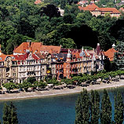
01 · Rund 100 Meter
See & Hafen.
Spazieren, Schiff fahren oder einfach mit Blick aufs Wasser den Tag ausklingen lassen.
Hotel Hirschen · Konstanz
Eine persönliche Arbeitsprobe von Hotelfreunde. Bitte geben Sie das Passwort ein.
Das Passwort ist nicht korrekt.
Inhabergeführt · am Bodanplatz
Ein persönliches Zuhause in Konstanz: 100 Meter bis zum Seeufer, drei Gehminuten zum Bahnhof und die Altstadt direkt vor der Tür.
Das Hirschen entdecken ↓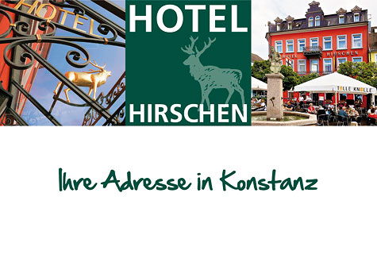
Bodanplatz 9 · 78462 Konstanz
Persönlich in Konstanz
Ob Geschäftsreise oder Privatvergnügen: Im Hotel Hirschen gehören Wärme und Freundlichkeit zur Gastlichkeit. Nach einem Tag zwischen Altstadt, Hafen und Bodensee wartet ein komfortables Zimmer – und morgens ein abwechslungsreiches Frühstücksbuffet.
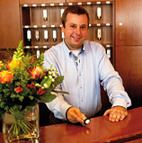
100 m
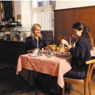
„Wärme und Freundlichkeit sind für uns wichtige Boten der Gastlichkeit.“
Alles in Gehweite
Uferpromenade, Hafen, Altstadt, Theater, Kino und das LAGO liegen nur wenige Schritte entfernt. Der Bodenseeradweg führt direkt am Haus vorbei.

Spazieren, Schiff fahren oder einfach mit Blick aufs Wasser den Tag ausklingen lassen.
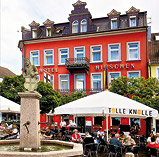
Shopping, Kultur, Cafés und Weinstuben: Das historische Konstanz liegt rund um den Bodanplatz.
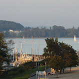
Das SEA LIFE am Ufer und viele Ausflugsziele am Bodensee sind schnell erreicht. Kinder sind willkommen.
33 Zimmer
Einzel-, Doppel- und Dreibettzimmer mit Dusche, WC, Fernsehen, WLAN und Telefon. Für die passende aktuelle Rate führt der direkte Weg zur Hotelbuchung.
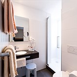
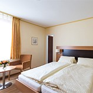
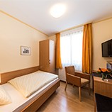
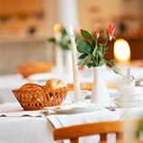
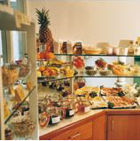
Morgens im Hirschen
Ein abwechslungsreiches Frühstücksbuffet ist das morgendliche Highlight – ganz gleich, ob danach ein Geschäftstermin, ein Stadtbummel oder ein Tag am See wartet.
Hotel Hirschen
„Urlaub oder Arbeit – hier ist Konstanz ganz nah und Entspannung gleich inklusive.“Ihr Stadthotel am Bodanplatz
Wählen Sie Ihren Reisezeitraum. Die eigentliche Buchung öffnet anschließend über die offizielle Direktbuchung des Hotels.